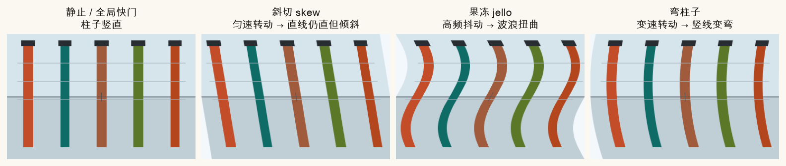
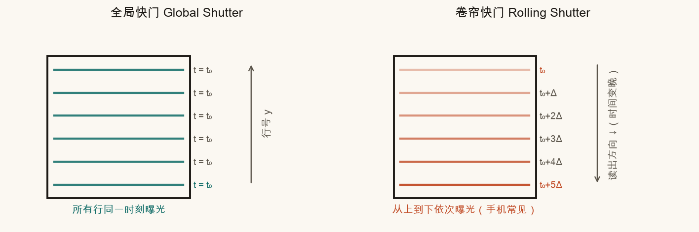
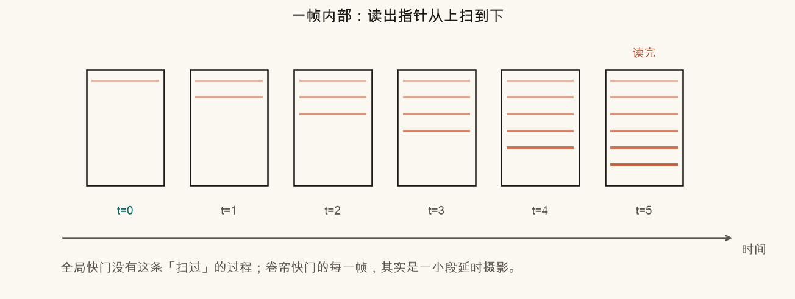
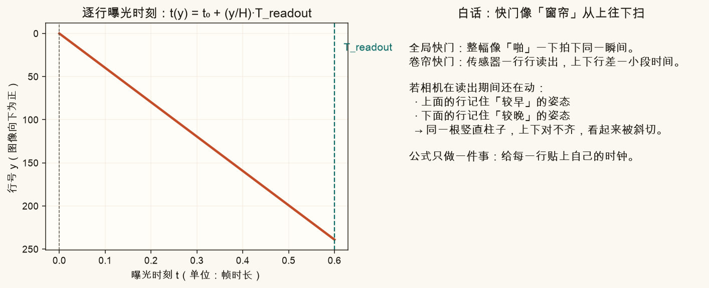
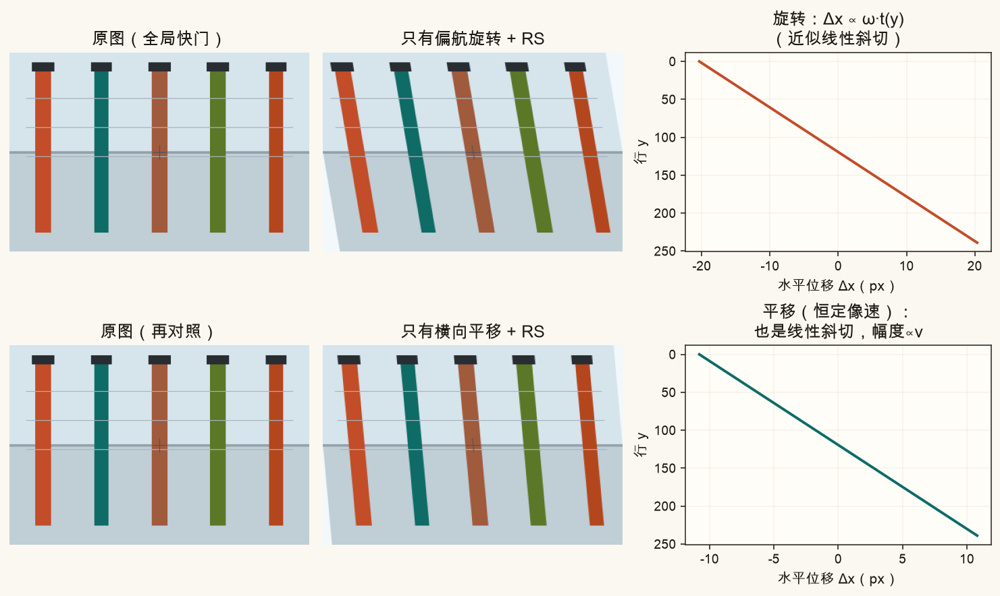
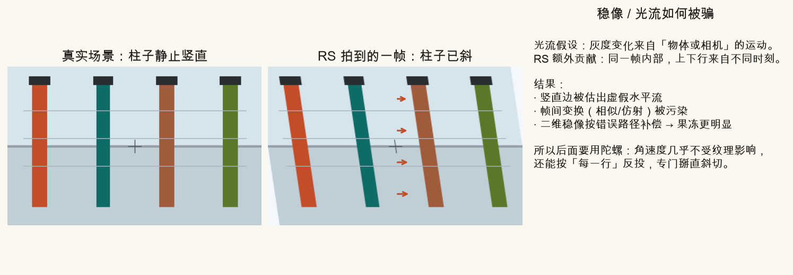

第 21 篇 · 重点 · 约 70 分钟
手机拍视频时，画面往往不是「整幅同一瞬间」，而是从上到下一行行读出。相机在读出期间还在晃，竖线就变斜、整幅像果冻。本篇用合成动画建立逐行曝光模型，看清旋转与平移各自长什么样，以及为何光流和二维稳像会被它污染。
打开手机，对着电线杆或门框快速左右甩一下，常会看到三种怪现象：
这些不是镜头「弯曲了世界」，而是同一帧里，不同行来自不同时刻。脚本用合成街景复现三类畸变：

生活类比：你用扫描仪扫一张纸，同时把纸往旁边抽——扫出来的字会歪。卷帘快门就是「边扫边动」的相机。
全局快门（Global Shutter）：整幅传感器几乎在同一时刻曝光、读出。工业相机、部分电影机常见。一帧 = 一个瞬间。
卷帘快门（Rolling Shutter）：按行（有时按列）依次曝光与读出。绝大多数手机 CMOS 都是这种。一帧 = 一小段延时摄影。


若相机完全静止，卷帘和全局看起来一样——因为每一行看到的世界相同。问题出在读出期间相机还在动。
设图像高为 H 行，整帧读出耗时为 Treadout（相对「一帧时长」的比例更方便想，例如 0.5 表示半帧时间才扫完）。约定第 0 行最先曝光，则第 y 行的时刻：
t(y) = t₀ + (y / H) · Treadout
白话：行号越大，时钟越晚。中间那一行大约在读出过程的正中间。

相机在动时，第 y 行记下的是时刻 t(y) 的投影。对远处竖直柱子、主要是水平运动时，可以近似写成「这一行整体水平挪了一点」：
Δx(y) ≈ vimage · ( t(y) − tmid )
这里 tmid 是中间行的时刻。减去它，是为了让画面中心别整幅漂走，只留下「上下相对错位」——也就是你眼睛看到的斜切。
vimage 从哪来？纯平移时它大致是 (f/Z)·v3D（焦距、深度、横向速度）。纯偏航旋转时，小角度下 vimage ≈ f · ω（ω 是偏航角速度）。本篇先把公式当成「给每行贴位移」，几何细节第 22–23 篇用陀螺接上。
点播放，看读出指针往下走：左侧是「正在形成的卷帘帧」，右侧对照「若用全局快门会拍到什么」。拖动偏航速度，柱子会边扫边斜。
两种最干净的合成实验：场景里的柱子完全静止，只让相机动。
看起来很像？对——在「远平面 + 匀速」假设下，两者的 RS 斜切形状相似。差别要靠深度变化、近景视差、或陀螺/IMU（知道是在转还是在挪）才能拆开。第 23 篇会用角速度直接按行反投。

失败案例：若角速度不恒定（猛甩一下），位移里出现 t² 项，竖线变弯——就是图 21-1 最右的「弯柱子」。果冻则多来自读出期间的高频小抖动，上下半幅剪切方向来回变。
光流（第 14–18 篇）默认：灰度变化来自物体或相机的真实运动，并且一帧内部几何是「某一瞬间」的投影。卷帘打破了后半句。
竖直柱子其实没动，但 RS 帧里它已经斜了。估光流时，算法会在柱子边缘看到虚假的水平位移；再用这些流去估帧间相似/仿射变换，路径就被污染。二维稳像按这条脏路径去补，有时反而把果冻拧得更夸张。

一句话：RS 把「时间误差」伪装成「空间运动」。纯视觉方法在快速转动时很难单独拆干净，所以手机 EIS 常结合陀螺仪（第 22–23 篇）。
左侧全局快门，右侧卷帘。加大 |角速度| 或读出比例，斜切立刻加重。也可以切换成「果冻」模式看波浪。
网页示意关掉就没了。脚本会生成全部课文对照图，并按你改的参数写出 ch21_my_rs.png。
source .venv/bin/activate # 若尚未激活
MPLCONFIGDIR=/tmp/mpl-cache python code/ch21_rolling_shutter.py会写出 ch21_global_vs_rolling.png、ch21_phenomena.png、ch21_rotation_vs_translation.png、ch21_flow_pollution.png 等，以及你的 ch21_my_rs.png。
打开 code/ch21_rolling_shutter.py，只改顶部这一段：
# ===== 改这里 =====
READOUT_FRAC = 0.55
YAW_DEG_PER_FRAME = 8.0
TRANS_PX_PER_FRAME = 28.0
N_PILLARS = 5
# ==================READOUT_FRAC 改成 0.05，再跑：斜切应几乎消失（接近全局快门）。YAW_DEG_PER_FRAME 改成 -15：斜切方向反过来。TRANS_PX_PER_FRAME、角速度保持较小：对比「平移斜切」与「旋转斜切」谁更狠。N_PILLARS 改成 8，看更密的柱林是否更容易察觉弯曲与错位。READOUT_FRAC = 0 且很大角速度：位移应全是 0（读出瞬间完成，没有行间时间差）。全局：整幅近似同一时刻。卷帘：逐行（或逐列）依次曝光/读出，一行一个时刻。
因为每一行看到的世界相同，时间差不会造成几何错位。动起来才暴露问题。
第 y 行的曝光时刻随行号线性变晚；T_readout 越大，上下行时间差越大，斜切越明显。
匀速时近似斜直线。角速度随时间变化（有角加速）时会出现弯柱子。
RS 把帧内时间差伪装成空间位移，光流估出虚假运动，帧间变换与路径被污染，按脏路径补偿可能加重果冻。
陀螺直接测角速度，不太依赖纹理；还能按行时间反投，专门校正 RS。纯视觉难以单独拆开「真运动」与「行间时间误差」。
下一篇进入陀螺仪与 IMU：角速度如何积分成姿态、为什么会漂、以及怎样和视频时间戳对齐——为第 23 篇「按行掰直 RS + 陀螺 EIS」打地基。